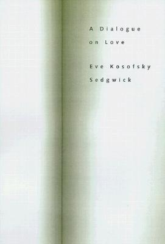

|
The Scholar and Feminist Online Teaching/Depression  Last week, at a meeting of my department's graduate admissions committee, one of my colleagues was complaining about a particular applicant whose personal statement focused on being diagnosed with depression in the middle of college. "I hate it when they use depression as an excuse," this colleague said. To which another one responded, "Depression is no excuse! Excuse, hell - it's a prerequisite." There is a lot to say and wonder about the relation between depression, under its many definitions, and the kinds of work we do over the decades as feminists, as intellectuals and activists, as autobiographers, and as teachers. In the process of thinking about this talk, I've found myself juxtaposing some of the scenes of these activities, and some of their different languages, beginning maybe unexpectedly with the scenes of pedagogy. Even when we are not in our classrooms, after all, each of these roles involves us in multiple positions within a densely innervated matrix of generational transmissions. And if the reader of our first-person writing doesn't have the immediacy of a face at our seminar table, we are all the likelier to endow her in our minds with the deeper pedagogical intimacy of our parent, our child, our mentors, our enemies, our past or future or alternative selves. When I connect this pedagogical relation to the issue of depression, I have in mind the reflections of the American psychologist Silvan Tomkins on the depressive personality in the educator. I am also thinking of Melanie Klein's related, but far from identical, notion of the depressive position. As far as I can tell, current popular thought seems to understand depression in terms of a kind of chronic natural gloominess, on the one hand, or alternatively as a completely exogenous malady, from who knows where, that is liable to descend on its unsuspecting host until heroically routed by medicine and positive mental hygiene. I have to say this version sounds very alien to me, even though it sometimes feels as though half of my conversation consists of urging other people to take antidepressants or find a shrink - in fact even though my little memoir, A Dialogue on Love, is an attempt to trace the course of a psychotherapy that I undertook to deal with longstanding depression. Departing from these forms of common sense about depression, Silvan Tomkins, to the contrary, discusses depressiveness, or the depressive personality or script, as a durable feature of certain people's way of being, a constitutive feature of their best aptitudes as well as disabilities, regardless of whether or not, at a given moment in life, they are experiencing depression. This makes much more sense to me - gets me further not only with depression itself, but with thinking, writing, and especially teaching. At some places in Tomkins, this depressiveness seems like a widespread and rather generalized state; at others, Tomkins gives it a specificity that itself seems quite autobiographical. For Tomkins, the most notable feature of the depressive, on emerging from childhood, is that he or she combines a passion for relations of mimetic communion - ideally, two-way or mutual mimesis, based on the sweetness and anxiety for the child of imitating and being imitated by an intermittently attentive adult - with an intense susceptibility to shame when such relations fail. This is a recipe both for overachievement in general and for pedagogical intensity in particular. Tomkins writes:
Tomkins makes explicit, moreover, that in these depressive dramas our students are likely to oscillate between two roles. On the one hand they can function for us as "substitute parents who are to be impressed [and] excited" but whose "boredom, . . . censure, and . . . turning away constitute an enduring threat and challenge." On the other hand, as they stand in for ourselves as children, we in the role of their parent will "censure [our] beloved children for their ignorance" and "love and respect them for their efforts to meet [our] highest expectations" (Tomkins 228-29, emphasis added). Or to recast the teaching situation in terms of a psychoanalytic encounter: sometimes I feel like my students' analyst; other times, floundering all too visibly in my helplessness to evoke language from my seminar, I feel like a patient being held out on by 20 psychoanalysts at once. To move from Silvan Tomkins's account of the depressive [person] to Melanie Klein's account of the depressive position is like moving from a minoritizing to a universalizing discourse. If Tomkins's depressive is a particular kind of individual who emerges from the contingency of a particular history with the strengths and weaknesses of a particular interpretive and performative strategy, Klein's depressive position, to the contrary, is a developmental phase - a developmental achievement - that is potentially available to everyone. Moreover, the depressive position is a uniquely spacious rubric. Despite its name it encompasses, for example, both the preconditions of severe depression and also the resources for surviving, repairing, and moving far beyond that depression. For Klein, the depressive position is one of only two positions - two modes of relationality - available to human creatures. And while the depressive position marks a developmental achievement over its alternative, the fragile paranoid/schizoid position, it is not a permanent achievement but part of a fluid, back-and-forth process between the two positions. What defines the paranoid/schizoid position, in all its fragility, are three rather violent things: the ego's inability to tolerate anxiety or ambivalence; its consequent strategy of splitting both its objects and itself into fragments that can be seen as exclusively good or bad; and its aggressive expulsion of intolerable parts of itself onto - or in Klein's more graphic locution, into - the person who is taken as an object. Klein writes that these "bad parts of the self are meant not only to injure but also to control and to take possession of the object" (Klein, 8); she calls this mechanism "projective identification." Projective identification is related to Freudian projection but is more uncannily intrusive: for Freud, when I've projected my hostility onto you, I believe that you dislike me; for Klein, when I've projected my hostility into you, you do dislike me. Projective identification is thus a good way of understanding, for example, the terrifying contagion of paranoid modes of thought - and as we'll see, it certainly seems indispensable for a lot of political analysis and group dynamics. But it's also a helpful way of understanding things that can go so painfully wrong in the classroom. For instance, a professor who's unable to tolerate or contain the anxieties of competition may run a classroom in which all find themselves unusually anxious about power or disempowerment. A professor's disavowed issues about originality can turn into a maelstrom of plagiarism anxieties that circulate in all directions. Or a professor who is unable to provide a home to her own discomforts about sexuality can accumulate a group of students whose learning process is clogged with manipulative or resentful scenes of seduction. All this is not even to mention the projective identifications that originate with our students, who can be just as self-ignorant or as disruptively charismatic as ourselves, if not more so. Again both in and beyond the classroom many of us, I think, are familiar with situations where our own or other people's preemptive need to disown feelings of racism, misogyny, anti-Semitism, and so forth - feelings that almost inevitably arise but are experienced as intolerable - is liable to propel circuits of interpersonal accusation that are explosive with the very forms of hatred that are under internal erasure. Thus for Klein's infant or adult, the paranoid/schizoid position - marked by hatred, envy, and anxiety - is a position of terrible alertness to the dangers posed by the hateful and envious part-objects that one defensively projects into the world around one. The depressive position, by contrast, is an anxiety-mitigating achievement which the infant or adult only sometimes, and often only briefly, succeeds in inhabiting. What makes the depressive position "depressive"? The threshold to the depressive position is the foundational, authentically difficult understanding that good and bad tend to be inseparable at every level. "The infant," as one Kleinian summarizes this argument, "at some stage . . . is physically and emotionally mature enough to integrate his or her fragmented perceptions, bringing together the separately good and bad versions. . . . When such part-objects are brought together as a whole they threaten to form a contaminated, damaged, or dead whole object," whether internal, external, or both - what I take to be a description of the experience of depression per se (Hinshelwood 138, emphasis added). "Depressive anxiety," this account continues, "is the crucial element of mature relationships, the source of generous and altruistic feelings that are devoted to the well-being of the object" (138). This, then, is the position from which it is possible to begin using one's own resources to assemble or "repair" the part-objects into something like a whole, albeit a compromised one. Once assembled, these more realistic, durable, and in that sense satisfying objects are available to be identified with, to offer one and to be offered nourishment and comfort in turn. Yet the pressures of that founding, depressive realization can also continually impel the ego back toward depression, toward manic escapism, or toward the violently projective defenses of the paranoid/schizoid position. We feel these depressive pressures in the forms of remorse, shame, confusion, depression itself, mourning for the lost ideal, and - often most relevant - a sad understanding of the inexorable laws of unintended consequences. My own sense is that activist politics, even more than pedagogy, takes place - even at best - just at this difficult nexus between the paranoid/schizoid and the depressive positions. Suppose the paranoid/schizoid, entirely caught up in splitting and projection, to be always saying, like Harold Bloom or even George W. Bush, "Those others are all about ressentiment." Suppose the depressive to be able to say at least intermittently, "We, like those others, are subject to the imperious dynamics of ressentiment; now how can the dynamics themselves become different?" It would certainly be presumptuous for me to suppose that the women represented here today all understand or do activism in the same way, or at anything like the same depth, and I feel out of my own depth in generalizing in this way. But as I understand my own political history, it has often happened that the propulsive energy of justification, of being or feeling joined with others in a right cause, tends to be structured very much in a paranoid/schizoid fashion, driven by attributed motives, fearful contempt of opponents, collective fantasies of powerlessness and/or omnipotence, scapegoating, purism and schism - paranoid/schizoid, in short, even as the motives that underlie political commitment have much more to do with the complex, mature ethical dimension of the depressive position. What to make of the turn to life narrative in the context of such split-natured and difficult activism and pedagogy? During the recent political season I've been struck by one unabashedly paranoid/schizoid kind of use of life narrative - as we've heard a phalanx of senators say that while they may loathe the actions or principles of Alberto Gonzales, for instance, it would be impossible to vote against his story. And we've heard similar language about Condoleezza Rice's "story" and Clarence Thomas's "story" and even John Edwards's "story," even if the latter of these did turn out to be possible to vote against. A life story in this sense, Gonzalez's story, is less a narrative than a compact consumer fetish, wholly instrumental, at once inspirational and subtly accusatory, its own history effaced, perfectly streamlined as a projectile to stop the mouths of his substantive critics, and lodged in public consciousness as the insidiously potent minimal unit of projective identification. To the degree that our memoir writing aspires to be different from this, it might make sense to think of it in relation to the depressive position. Of course it's easy to fear that autobiography merely exposes a bumptious narcissism, reeking with its primordial first person singular. I'm much more struck by something else: the use of these pages, if anything, to aerate, expose, and ideally to disable or "burn out" the potency of certain violent defenses. At least, that ambition is central to the way A Dialogue on Love is constructed. For me, the interest of narrating this psychotherapy lies hardly at all in reconstructing childhood material, as it happens - or even adult motives. In fact, already, when I reread it, the accounts of myself seem dangerously skill-less and unliving. Instead, what I wanted to make palpable - and available - was the quality of a specific listening space, a space that is open to every anxiety but resists propelling onward its fatal itinerary. It fascinated me that my shrink, Shannon, was both a particular kind of a person, "mild and bristling with his soft gray nap,
- both that particular, grotesque and slightly fatuous middle-aged male figure in a North Carolina landscape; and at the same time, someone whose most economical means - a silence, an impassive face, a willing inclination of the head - evoke a voice that never otherwise comes into being, a voice that's somewhere between talking to oneself and another. "When I'm away from Shannon," I write, "I try to summon it up - the voice that speaks in a quiet double way, the being alone but not being alone.
I think it's clear that a pedagogical desire underlies this narrative - desire both to inhabit but equally to offer this radically, ever newly unpreempted space. I wanted it in the formal choices I made - the interpenetration of prose with chains of haiku, for instance, as in the 17th-century Japanese form called haibun. Also the interspersing of my accounts with passages in small capital type from Shannon's notes - which record sometimes his thoughts but mostly my thoughts and dreams, in a permeable first person that refers sometimes to him and at other times to me. There are times when even I can't tell whose first person it is. In fact, as I find, it's my pedagogical impulse itself that draws me into this space: not the desire to teach my shrink, though that's one kind of (often intrusive) presence, but the fresh wellspring of my identification with - and my mimicry of - his mysterious skill in non-interference.
The strangest thing about this therapy, about the book's ambition, is this: while it's directly about depression and depressiveness - and its narrative encompasses illness, as well, in the period when I discovered that my breast cancer had become metastatic and hence incurable - its tonality, at least in my head, is something much more like comic. I don't mean at all in the sense of gallows humor. It's more like the comedy of underdetermination, of sudden relaxation. May I bring in yet another linguistic framework, on top of Tomkins and Klein? It's about karma. Not karma as a system of reward and punishment, but karma as plain causality: the inexorable Rube Goldberg physics of those uncontrollable chains of projective identification. The ways in which what one is puts its fatal spin on what one says, does, and perceives - and vice versa. For ressentiment, then, read karma - the big messy psychic footprint, the things that make someone difficult to be with or difficult to be. I'm imagining something like this, that the paranoid/schizoid position involves bad karma, lots of it - it emerges from bad karma and, through projective identification, sends more bad karma careening out into the world. And the depressive position involves the endless, heroic but discouraging attempt to turn bad karma into good karma. In every religious tradition I know of, though, there is at least one stream that is heading somewhere different from this. In Buddhism you could paraphrase it thusly: It's better to have good karma than bad karma; but the best thing of all, the most liberating and skillful thing, is to have no karma. I should probably add that, at least in mystical Buddhism, no karma doesn't mean no action. Instead, it's the figure without karma, the bodhisattva, who is able to perceive and be perceived clearly enough that the things they do are efficacious - and no more than efficacious. It seems inevitable that, for us karmic individuals, even the invocation of non-karmic possibility will be karmically overdetermined: it will have all too many uses, too many causes and too many effects. Clearly it can function as evasion, the way the notion of the Aesthetic is now seen as functioning. You might even see it as overdetermined by our depressiveness itself and by our pedagogical neediness. At any rate, that these elements can be closely proximate is clear. To me, though, apparently a vision of non-karmic possibility, however subject to abuse, at least opens a window to give air and light onto scenes of depressive pedagogy.
At first I thought I'd know when therapy was successful because I'd stop feeling the want of being dead. But, I finally say to Shannon, "This is such a deep, old fact about me that it could be a terrible index of what might change. If I waited for that . . . !" I'm wondering now what else might be different and better - even for someone who remains convinced, with the ancients, that it would be best not to be born. Yes, Shannon says. He too has assumed this is a likely scenario: many other things changing but the one thing not changing. Also, he says, if such a thing did change it would probably do so imperceptibly slowly. Then he produces an apparent non sequitur. A story about a patient of his long ago, someone with "not exactly multiple personalities,
who after many years - in fact long after the end of therapy - woke up one morning and found she no longer had multiples. Just that suddenly. Looking back, I think he's produced this story "just in case." Just in case, that is, what my announcement really meant was something different, something like "I think I'm ready to relinquish this stubborn symptom, but I'm scared about what will be left of me." I love his floating the story so coolly as a non sequitur - a story about the non-necessity, in therapy, of what "follows." It gives me a clue. I want to be open to the chance that what any clamorous pain
After this, in fact, I get very charmed and relaxed by everything that looks like non-necessity. I've started noticing how lots of Shannon's best comments - the ones that change the aspect of things for me - amount to nothing more profound than "It ain't necessarily so." Nowadays, when students ask me, about one thing or another, "But wouldn't that clearly imply-?" or "Doesn't that have to involve-?", it feels Shannonlike when I can respond,
Here's a Buddhist meditation I've read about. I can even do it.
It happens in a public place; the substance of it is to recognize that every other person there, one by one, male and female and young and old, has been, in some earlier life, your mother. Or more likely, in many lives. And regarding the people one by one, you learn to understand how this could have been so. One by one as you gaze, you can see what kind of mother they were to you; you can see as well, slowly, what kind of a child you were to them. Over and over and over
Shy as I am, I'm pretty good at this meditation. In almost every face I can find the curve of a tenderness, however hidden. The place of a smile or an intelligence - a shared one. Even in a skinhead without any lips to speak of; or in a girl who's anxious, anorexic, half crazed with all her narcissistic burden - even from her I can elicit and nurture it, the sense of her possible, beautiful care of me. Indeed, of a compassion; of her imagination, or his. Of course, with babies it's easy. In a roomful of my students - I can find it. It's a therapy day and I've driven up to the gray building early for our hour. Early enough to clamber across the parking lot, across the parking lot of the bank next door, across Ninth Street, to ask someone at the BP station on the corner a question about my car. But the shrubby border between the two parking lots is unexpectedly steep, mulched with its slippery pine needles. Typically clumsy, I tumble, almost fall. Then collecting myself, move on
After my errand, I'm walking back from the gas station when I notice Shannon rounding the corner toward the gray building. He's crossing the bank parking lot ahead of me and doesn't see me. When my sister and I were in the same high school, she bitterly accused me of embarrassing her by walking around alone looking as if I was thinking. I don't know if that's how Shannon looks; I notice more the calm buoyancy with which he is able to steer his round, large, light body, like a float in a Macy's Thanksgiving Day parade. Even if he is thinking, he's alert to his surroundings. When he gets near the bottom of the shrubby border, suddenly the balloon makes a graceful, low dip: I see him gather up from the pavement the clumps of pine mulch I kicked down as I was teetering on the brink. Then bobbing up gently, he pats it back into place, his hands briefly smoothing it in with the other mulch.
Why do I feel afterwards as if, whatever my frustration or fear, I'm carrying with me an object of reflection: if I turn inward toward it, it will make me smile? I'm wary of such sudden condensations of sweetness, the kind that, in the past, have made me fall in love. But I don't resist, either, secretly fingering this enigmatic pebble. I can't quite figure out what makes its meaning for me. Diffident, I write to my friend Tim that there may be something inexhaustibly pleasing in the tight, light knot of space, time, and seeing. How the small extent of Ninth Street, our wide-skied, midwestern-feeling little college town, turns into a time-lapse graphic that lets Shannon occupy the place where I was, encountering my ghost without recognition, unmaking my mistake - me, turning back, seeing it. And I love that his care for me was not care for me. Tim writes back, "Far from tedious I find the image of Shannon bending over to pick up mulch - the same that you had dislodged, in falling, if I understood you - not knowing it was you who had dislodged it, to have the power of something in De Quincey - or perhaps the film noir version of De Quincey, that I carry around in my head. "An immediate, involuntary substitution: anonymous shrinks, doing reparative work - in their spare time."
Hinshelwood, R. D. A Dictionary of Kleinian Thought. Second Edition. Northvale, NJ: Jason Aronson, 1991. Klein, Melanie. "Notes on some Schizoid mechanisms." The Writings of Melanie Klein. Vol. 3, pp. 1-24. London: Hogarth, 1946. Tomkins, Silvan S. Shame and Its Sisters: A Silvan Tomkins Reader. Eve Kosofsky Sedgwick and Adam Frank, eds. Durham, NC: Duke University Press, 1995. |